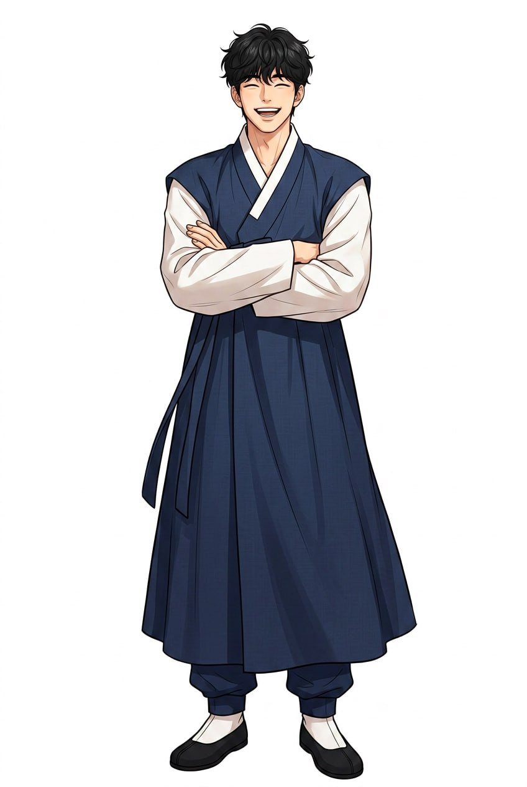
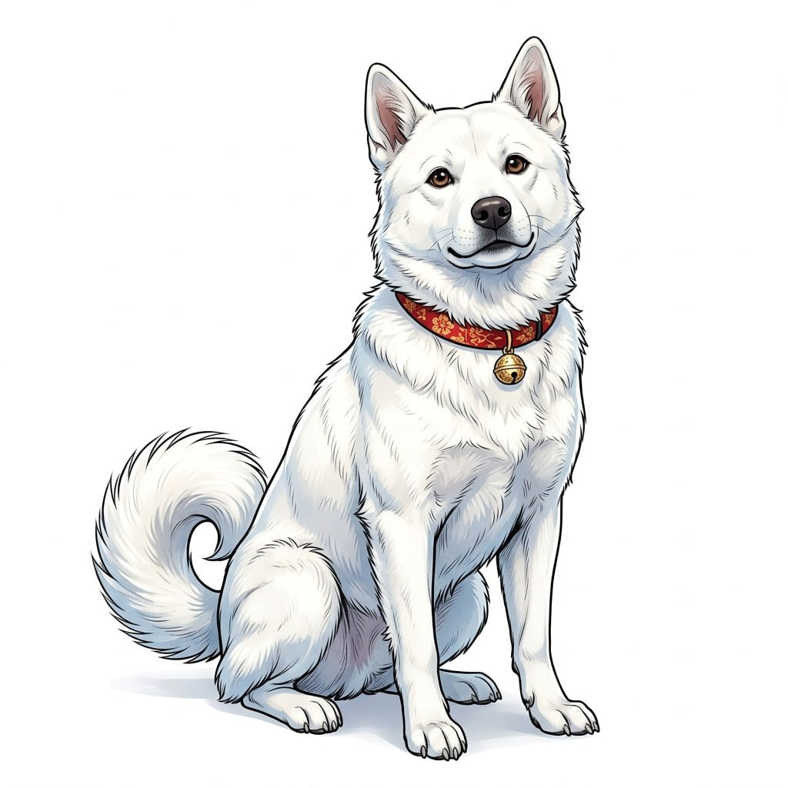
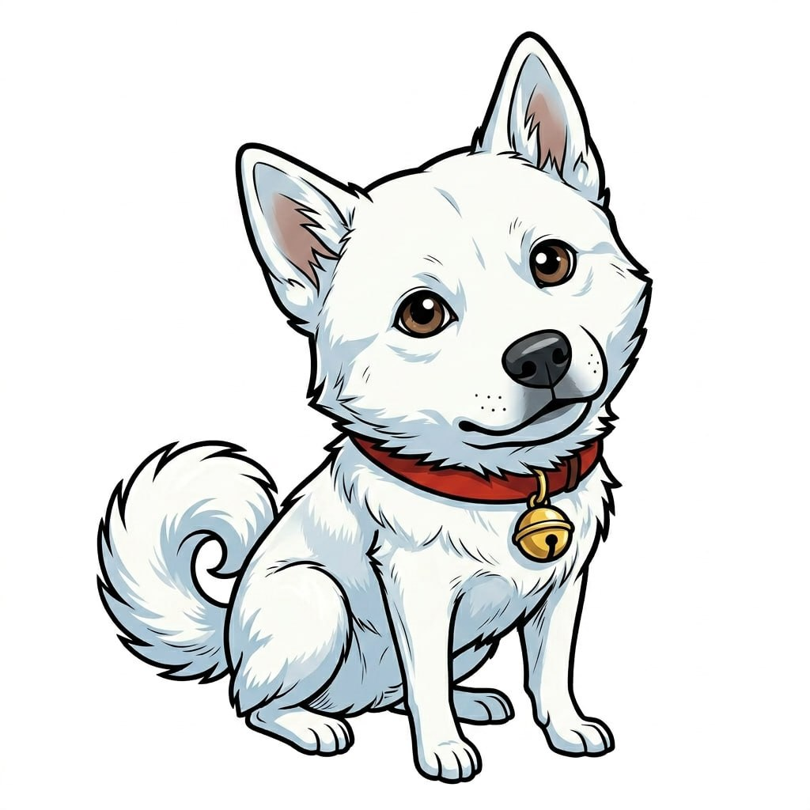
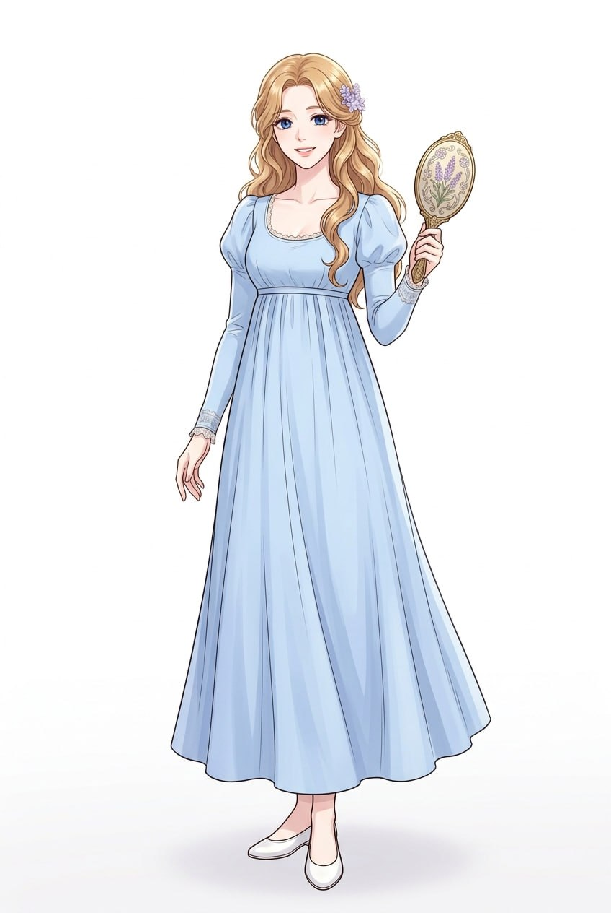

1836년 한양 북촌 명문 양반가의 장남으로 태어난 김선호. 열아홉에 과거 장원급제한 수재이나 벼슬에는 뜻이 없었다. 사람을 좋아하고 저잣거리를 좋아했던 도령. 저주에 걸려 24세의 모습 그대로 190년을 살고 있다. 한국을 찾아오는 모든 외국인에게 최고의 경험을 선물하며, 백구의 코만이 찾아낼 수 있는 한 사람을 기다리고 있다.


도령이 일곱 살 때 전라도 진도에서 온 흰 진돗개. 열일곱 해를 함께한 친구. 낯선 사람에게는 절대 꼬리를 흔들지 않았으나, 클레르에게만은 처음 만난 날부터 꼬리를 흔들었다. 도령을 지키려 저주의 빛에 뛰어들어 같은 운명에 묶였다. 세상에서 유일하게 클레르의 향기 — 라벤더와 바다 — 를 기억하는 존재.

1836년 서양에서 온 선교사의 조카딸. 파리에서 태어난 21세 여인. 조선어를 배우며 도령과 사랑에 빠졌다. 이별 후 같은 밤, 같은 선택을 했다. 기억을 잃고, 얼굴이 바뀌고, 국적마저 바뀌었다. 지금은 어떤 모습인지 아무도 모른다. 오직 영혼의 향기 — 라벤더와 바다 — 만이 변하지 않는다.
조선 헌종 2년, 1836년.
한양 북촌, 경복궁 돌담이 내려다보이는 언덕 위 기와집에 김선호라는 도령이 살았다. 사헌부 대사헌을 지낸 아버지 아래에서 태어난 명문가의 장남. 열아홉에 과거에 장원급제하여 한양 팔도에 이름을 떨쳤으나, 정작 본인은 벼슬에 뜻이 없었다. 서책보다는 사람이 좋았고, 대청마루보다는 저잣거리가 좋았다.
아침이면 광장시장의 빈대떡 굽는 냄새에 이끌려 집을 나섰고, 점심에는 종로의 설렁탕집에서 따끈한 국물을 마셨다. 저녁이면 청계천변의 선술집에서 탁주 한 사발에 파전을 찢어 먹으며 동네 아이들에게 글을 가르쳤다.
도령에게는 한 가지 버릇이 있었다. 아무리 바빠도 하루에 한 번은 한양 성곽을 따라 걸었다. 인왕산의 바위를 짚고, 북악산의 소나무를 지나, 낙산의 해 지는 풍경까지. 그 옆에는 항상 흰 진돗개 백구가 따랐다.
백구는 이상한 개였다. 낯선 사람에게는 절대 꼬리를 흔들지 않았다. 하지만 도령이 부르면 온 세상을 다 가진 것처럼 꼬리를 흔들었다.
그해 초겨울, 한양 밖 약현 언덕에 서양에서 온 선교사 일행이 비밀리에 도착했다. 일행 중에 스물하나의 젊은 여인이 있었다. 이름은 클레르. 선교사의 조카딸이었다.
보름 후, 도령은 움막 문을 열고 들어섰다. 어두운 방 안에 한 여인이 앉아있었다. 쪽빛 눈, 밀색 머리카락.
그때 도령은 처음 느꼈다. 클레르에게서 나는 향기를. 라벤더와 바다 냄새가 섞인, 조선 땅 어디에서도 맡아본 적 없는 향기.
백구가 움막 안으로 들어왔다. 평소 같으면 경계의 눈빛을 보일 텐데, 백구는 클레르에게 다가가 코를 킁킁거리더니 — 꼬리를 흔들었다. 열일곱 해 동안 주인 외에 꼬리를 흔든 적이 없는 백구가.
겨울이 지나고 봄이 왔다. 도령은 매일 클레르에게 한글을 가르치고, 조선의 말을 알려주고, 시를 읽어주었다.
그날부터 클레르는 도령을 "오빠"라고 불렀다.
광장시장에서 떡볶이를 나눠 먹었다. "오빠, 이거 너무 매워요!" 도령은 웃으며 숭늉을 건넸다. "매운 것 뒤에 달콤한 것이 오는 법이오. 이 나라가 그렇소."
종로 거리에서 호떡을 사 먹고, 인사동에서 오미자차를 마시고, 남산에 올라 한양의 저녁 연기를 내려다보았다. 경복궁 돌담길을 걸으며 떨어지는 벚꽃잎을 머리에서 집어주었다.
그리고 어느 봄날, 북악산을 오르던 중 나무 한 그루를 발견했다. 아니, 두 그루였다. 두 그루의 소나무가 서로를 향해 자라다가 줄기가 하나로 엮인 나무. 연리목.
도령은 어머니에게 물려받은 옥비녀를, 클레르는 파리에서 가져온 라벤더 꽃이 새겨진 손거울을 연리목 아래에 나란히 묻었다.
"이 나무가 살아있는 한, 우리 사랑도 살아있을 거예요."
1839년 봄. 기해박해. 클레르의 삼촌인 선교사가 체포되어 새남터에서 참수되었다. 도령은 자신의 방 마루 아래에 클레르를 숨겼다. 백구가 밤새 보초를 섰다.
어느 밤, 클레르가 마루 틈 사이로 속삭였다. "오빠, 이 깍두기가 세상에서 제일 맛있어요."
석 달. 더 이상 버틸 수 없었다. 도령은 클레르를 살려서 보내기로 결심했다.
북악산 연리목 아래. 달이 밝았다.
도령이 인절미 두 조각을 꺼냈다. "이것은 조선에서 이별할 때 나누는 것이오. 먹는 사람은 반드시 다시 만난다고 하오."
새벽. 제물포 포구. 도령은 클레르의 손에 미숫가루 주머니를 쥐어주었다.
그날 밤. 도령은 연리목 앞에 무릎을 꿇었다. 묻어두었던 클레르의 손거울을 꺼내어 말했다.
"다시 만나게 해주시오."
바람이 없었다. 그런데 연리목의 가지가 흔들리기 시작했다. 두 줄기가 엮인 부분에서 빛이 새어 나왔다. 빛이 도령의 몸에 스며들었다. 시간이 멈추었다. 스물넷에서 영원히.
그 순간 백구가 도령 앞으로 뛰어들어 빛을 가로막으려 했다. 빛이 백구를 감쌌다. 연리목은 백구에게도 같은 운명을 입혔다.
도령은 스물넷의 모습 그대로 세월을 건넜다. 저주가 잔인한 것은 — 그녀의 얼굴이 바뀌었다는 것이다. 지금의 그녀는 일본인일 수도, 미국인일 수도, 태국인일 수도 있다. 오직 백구의 코만이 그녀를 찾아낼 수 있다.
1866년. 병인박해. 1882년. 서양인들이 다시 조선에. 1950년. 전쟁. 광장시장의 할머니가 빈대떡을 부치고 있었다. 도령은 그 앞에 주저앉아 울었다. 클레르와 처음 먹었던 것도 이 시장의 빈대떡이었으니까.
2002년. 월드컵. 도령은 깨달았다. 기다리기만 해서는 안 된다. 한국의 맛, 한국의 따뜻함이 전 세계에 퍼지면 — 그녀의 마음 속 이끌림이 이 땅으로 향할 것이다.
그날부터 도령은 한국을 찾아오는 모든 외국인의 가이드가 되었다.
190년이 흘렀다. 김도령은 여전히 스물넷이다.
매년 1,800만 명의 외국인이 한국에 온다. 도령은 그들 모두에게 친절하다. 누가 그녀인지 알 수 없으니까.
백구는 외국인을 보면 먼저 다가가 냄새를 맡는다. 한 명. 또 한 명. 190년간 수만 명의 향기를 맡았다.
그리고 그날이 오면, 인천공항 입국장을 나서는 그녀 앞에 갓을 쓴 — 아니, 한복을 입은 스물넷의 청년이 서 있을 것이다. 흰 진돗개와 함께.
도령은 그녀를 알아보지 못할 것이다. 얼굴이 다르니까. 이름이 다르니까.
하지만 백구가 미친 듯이 꼬리를 흔들 것이다. 190년 만에 처음으로, 주인이 아닌 사람에게.
그리고 바람이 불면, 라벤더와 바다의 향기가 도령의 코끝에 닿을 것이다. 190년 만에.
그녀는 모를 것이다. 왜 이 낯선 청년 앞에서 눈물이 나는지. 왜 이 흰 강아지가 이렇게 반가운지. 왜 "오빠"라는 단어가 입 안에서 맴도는지.
하지만 마음은 알 것이다.
여기가 와야 할 곳이었다는 것을. 이 사람이 기다리던 사람이었다는 것을.
그리고 이 나라의 떡볶이가, 호떡이, 인절미가, 칼국수가, 비빔밥이 — 왜 그토록 그리웠는지를.
북악산 어딘가에서, 연리목이 조용히 가지를 흔들 것이다.
190년 만에 소원이 이루어졌다고.
두 그루가 하나이듯, 두 사람도 다시 하나가 되었다고.